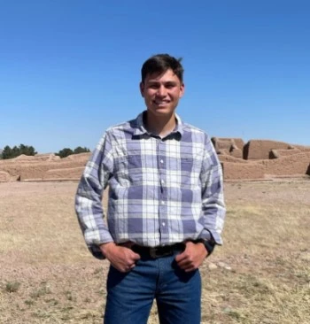

About Me
My Name is josue hernandez. I was born in ciudad juarez, chihuahua mexico. Seeking a degree in computer science. I am abou to get married and I can't stop talking about it. I work as an intern at SI-GO Logistics developing and working with their web pages. I love practicing basketball and eating tacos.
Chihuahua, Mexico

Mexico, officially the United Mexican States, is a country in the southern portion of North America. It covers 1,972,550 km, making it the world's 13th-largest country by area; with a population of almost 130 million, it is the 10th-most-populous country and has the most Spanish speakers.